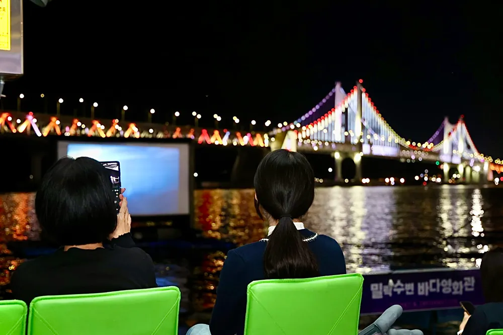

BIFF Everywhere with local residents on a car-free street near Pusan National University
A Festival in Step
with
an Entire City
Community BIFF
and BIFF Everywhere
October 19, 2026
By Lee Woo-bin (Cine21 Reporter)
Photos Courtesy of the Busan
International Film Festival
-

Audiences Become Programmers… Community BIFF Participation Rises 1.7-Fold
-
From Markets to Airports… BIFF Everywhere Turns Busan into a Cinema
-
Community BIFF and BIFF Everywhere: Everyday Film Festivals Growing with Local Communities
The Busan International Film Festival is seeking to expand across Asia and the world while maintaining its strong ties to Busan. At the heart of this effort are Community BIFF and BIFF Everywhere. Now in its ninth year, Community BIFF is an audience-driven, community-focused festival. While the Busan International Film Festival's programs held around the Busan Cinema Center in Centum City follow a traditional festival screening format, Community BIFF presents distinctive programs centered in Nampo-dong, Busan, the festival’s original home. BIFF Everywhere, meanwhile, is extending the festival’s cultural reach by expanding its screenings beyond Busan to surrounding areas and even Seoul.
A total of 29,511 people attended Community BIFF’s screenings and accompanying events from October 8 to 11 this year, more than 1.7 times last year’s figure. The 69 films screened in theaters drew a combined audience of 5,186. More than one million international tourists visited Busan in the first quarter of this year, and Community BIFF and BIFF Everywhere are making the festival more accessible and welcoming to both international visitors and local residents. In doing so, they have firmly established themselves as initiatives that help the festival grow alongside the region and its communities. By examining this year’s achievements of Community BIFF and BIFF Everywhere, we take a fresh look at the Busan International Film Festival as a festival deeply rooted in its local community.

This year’s Night Before BIFF, held on the outdoor stage at BIFF Square
Audience-Curated Community BIFF: Request Cinema
One of Community BIFF’s signature programs is “Request Cinema: A Theater by Request.” Conceived in 2018 and launched in earnest in 2019, the program invites people from across the country to submit their own programming proposals before the festival and then organize screenings and accompanying events during the festival. This year, a record 92 proposals were submitted to Request Cinema, of which 18 were selected through audience voting and an in-depth internal review and brought to life at the festival.
Here is one example of how it works. A screening marking the 20th anniversary of 200 Pounds Beauty (2006) was presented as part of a program titled “Beauty Is Still in Pain,” with lead actress Kim Ah-joong and guest director Byun Young-joo taking the stage to discuss the film. Another program featured a screening of Scrapper (2023), followed by a conversation in which the audience programmer and the head of the film’s distribution company shared behind-the-scenes stories about the film.
Jung Mi, the Busan International Film Festival programmer responsible for Community BIFF and BIFF Everywhere, said, “With each passing year, the term ‘citizen programmer’ feels less fitting. They now demonstrate abilities comparable to those of programmers at any film festival. This year, each team even produced and distributed its own promotional video, further expanding the scope of its activities.” As Jung noted, the festival also serves as “a place to discover and nurture film professionals and audiences.” Each year, new programmers emerge through the process of revisiting, screening, and discussing films that audiences genuinely want to see—not just world premieres and highly anticipated new releases.


Scenes from the Request Cinema programs “Beauty Is Still in Pain” (top) and “Three Impressions of Actor Kang Ae-sim”
Conversations with Masters: Master Talk
Talk events in which audiences engage in discussions with a film’s director and production team following a screening are generally known as “Guest Visits” or “GVs.” Community BIFF’s “Master Talk,” however, is markedly different. Designed for real-time, two-way communication, Master Talk allows audience members to share live commentary online through a dedicated app while the film is being screened. Their comments appear simultaneously on the right side of the screen, and the visiting director and production team respond to them in real time. The use of simultaneous interpretation equipment also allows audience members to focus entirely on the film. According to Community BIFF Operating Committee Chair Jo Won-hee, it is “a program developed while exploring ways to extend the conventional GV format online.”
Programmer Jung Mi, who conceived Master Talk, explained that the goal was “to strengthen the festival’s interactive character and encourage greater audience participation.” She added, “It is not always easy to invite renowned directors to a film festival. But when we tell them that audiences genuinely want to see them and speak with them, most creators agree to participate without hesitation. The program serves audiences above all else.” This year’s Master Talks featured Yim Soon-rye’s Waikiki Brothers (2001) and Ryoo Seung-wan’s The City of Violence (2006). Jung recalled, “Both directors threw themselves into the real-time interaction so wholeheartedly that they were sweating profusely, while actor Park Hae-il and other participants also readily joined the events.” She added, “Creators who attend once often say that Master Talk is one event they would definitely participate in again.”


The Waikiki Brothers Master Talk featuring director Yim Soon-rye and actor Park Hae-il (top),
and the The City of Violence Master Talk featuring director Ryoo Seung-wan and action director Jung Doo-hong
Sustaining and Expanding Cinephile Culture
Another Community BIFF program, the Community BIFF Collection, brings together creators who are expanding the foundations of contemporary culture across the boundaries of film, music, publishing, new media, and other fields. One of this year’s most notable programs was “1976 vs. 2026: Conversation with 20-Year-Old Cinephiles.” The program screened early works by director Kim Hong-joon, one of Korea’s leading cinephiles and a professor at Korea National University of Arts who formerly served as director of the Korean Film Archive, with Kim himself taking the stage. He was joined by Lee Yoon-young, CEO of film distributor Cinematograph, who represented the perspectives and tastes of today’s cinephiles.
Programmer Jung Mi explained the intention behind the program: “We wanted to hear from cinephiles communicating through film across a 50-year divide. As Director Kim Hong-joon noted, living as a film enthusiast inevitably brings moments of loneliness and solitude. At such times, Community BIFF is needed as a place where people can find and meet like-minded companions and build solidarity.” She also emphasized Community BIFF’s value in conveying the message that “anyone struggling with their love of cinema can come to Busan, the city of film, and find a community.”
It was all the more special that the principal cast and creators of the JTBC drama We Are All Trying Here, which tells the stories of independent filmmakers, appeared at Community BIFF this year. The outdoor stage greeting and talk featured writer Park Hae-young, director Cha Young-hoon, and cast members including Koo Kyo-hwan, Oh Jung-se, and Kang Mal-geum. The event continued with “Gobak Film Night,” a party named after the film production company featured in the series, adding further energy to the festival.
The fragmentation of contemporary film culture is undeniable. Even when film festivals are held, it is difficult to find the same sense of closeness between creators and audiences that existed in the past. Today, as not only film festivals but also theater-centered offline culture declines, the very foundations of film culture are shrinking. This makes it all the more important for film festivals to establish themselves as places where cinephiles and others involved in film culture can connect, come together, and cultivate a culture of their own. Community BIFF is providing precisely such a space.

The cast of We Are All Trying Here meeting with audiences
BIFF Everywhere Turns the Entire City of Busa into a Screen
After the Busan International Film Festival’s main venue moved to the Busan Cinema Center area in Centum City, some observers noted that the festival had fewer opportunities to engage with local communities. BIFF Everywhere is addressing this issue by broadening the festival’s reach across Busan. This year, BIFF Everywhere held screenings throughout Busan, as well as in Yangsan and Seoul, from October 3 to 15. Special screening venues were established not only in conventional cinemas but also in places where residents live and spend their time, offering distinctive screenings and events. This year’s 18 venues included the international terminal duty-free area at Gimhae International Airport in Gangseo-gu; Let’s Run Park Busan-Gyeongnam in Gangseo-gu; Sadeok Market and the West Busan Media Center in Gangseo-gu; the central intersection of the car-free street near Pusan National University in Geumjeong-gu; Gijang Janggwancheong in Gijang-gun; the circular plaza in front of Tongmyong University’s Main Building in Nam-gu; Ocean Hall at the BNK Busan Bank Headquarters in Nam-gu; 168 The Deck in Dong-gu; MEGABOX Seomyeon Daehan in Busanjin-gu; Jeongi-inneun Gupo Market in Buk-gu; Busan Jeongbeopsa Temple of the Cheontae Order of Korean Buddhism in Seo-gu; Domohan in Suyeong-gu; Millak Waterfront Park in Suyeong-gu; Hyundai Motorstudio Busan and F1963 in Suyeong-gu; the second-floor Ocean Garden at P.ARK in Yeongdo-gu; Mokhwadang 1944 in Yangsan; and the National Assembly Members’ Office Building in Yeouido, Seoul. Locations across Busan, from the heart of the city to a temple on a mountainside, were transformed into cinemas.
With events taking place at such a wide variety of locations, the guests appearing on stage were equally diverse. At Domohan, the former official residence of the Busan mayor in Suyeong-gu, Professor Jung Joon-hee, director Byun Young-joo, actor Kim Eui-sung, and Operating Committee Chair Jo Won-hee participated in a discussion titled “Busan and a Film Festival Closer to the Lives and Emotions of Its Citizens.” At Ocean Hall in the BNK Busan Bank Headquarters, directors Kim Hong-joon and Lee Myung-se and actor Jung Kyung-soon gathered to reflect on the late actor Ahn Sung-ki’s 69-year acting career.
BIFF Everywhere also continues to collaborate with local institutions and organizations. This year alone, it organized programs with local merchants’ associations, youth centers, youth startups, universities, commercial district revitalization initiatives, urban regeneration projects, and local governments, strengthening its role as a community-based festival. Funding from the film festival accounts for only one-quarter of BIFF Everywhere’s total budget. The remainder is secured through cooperation and sponsorship from the local community, creating numerous opportunities for collaboration through project budgets that do not place an excessive financial burden on local organizations. Community BIFF also maintains exchanges and partnerships with the Busan Council on Social Welfare, Busan Science Culture Hub Center, Busan Tourism Organization, Busan Cultural Foundation, Im Kwon Taek College of Film and Media Arts at Dongseo University, and BNK Busan Bank Art Cinema.




From top: Gupo Market, Millak Waterfront Park, the international terminal duty-free area
at Gimhae International Airport, 168 The Deck, and the second-floor Ocean Garden at P.ARK, all venues for BIFF Everywhere
A Cradle for Local Filmmakers, a True City of Film
Meanwhile, BIFF Everywhere also serves as a forum for communication among local filmmakers and a cradle for nurturing new filmmaking talent in the region. Through “Anyone Can Make a Film,” a film production project now in its sixth year, established local filmmakers serve as mentors while aspiring filmmakers from the region participate as mentees, making their own films before and during the festival and ultimately screening the completed works. Cultural and arts organizations from across the region also take part. year alone, the participating organizations included Gommasil Pictures, supported by the Yangsan Regional Revitalization Support Center; Ilsabullan, supported by Save the Children Korea; Theater Arts Experimental Group Cho; the Busan Welfare Center for People with Cerebral Palsy; and the Sangri Comprehensive Social Welfare Center. The project culminated in both a workshop and a celebration in which Busan residents from diverse backgrounds, including those with limited access to cultural opportunities, came together to tell their stories through short films.

This year’s Busan International Film Festival “BIFF Everywhere” leaflet
Programmer Jung Mi summed up the local partnerships fostered by Community BIFF and BIFF Everywhere with the phrase “an everyday film festival.” She explained, “The more the festival is confined to a specific location, the harder it becomes for Busan residents to experience its energy. For Busan to become a true city of film, people need not only opportunities to watch good films in theaters but also more places where they can immerse themselves in cinema and the festival experience, both during and outside the festival period.” Community BIFF and BIFF Everywhere are seeking to make cinema as natural a part of everyday life and culture as breathing. Before we know it, Community BIFF will be celebrating its tenth anniversary next year.